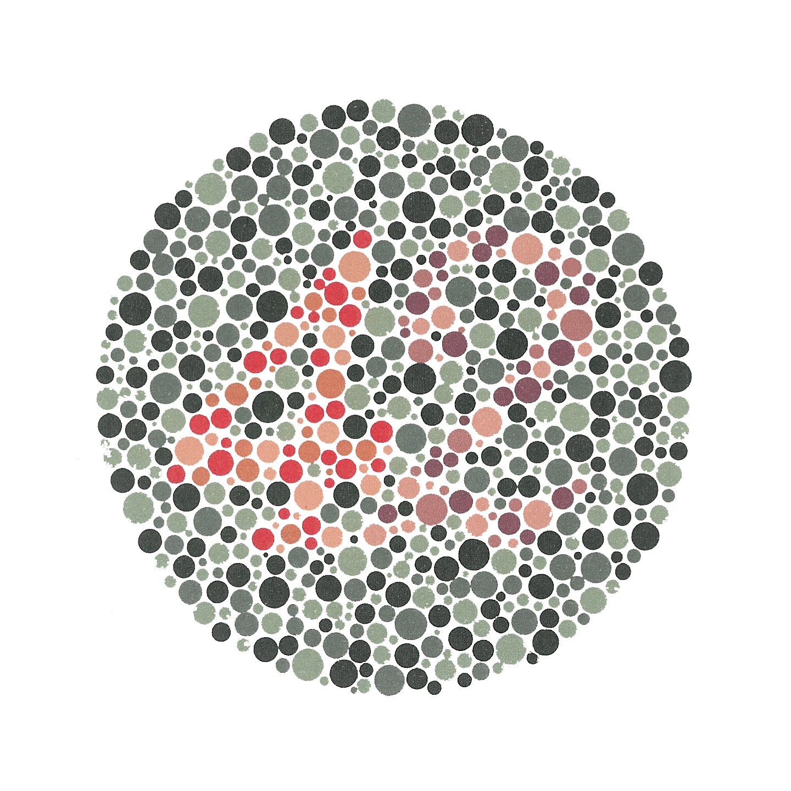

<!DOCTYPE html>
<html>
  <head>
    <title>Experiment</title>
    <!-- lodash -->
    <script src="https://cdn.jsdelivr.net/npm/lodash@4.17.10/lodash.min.js" type="text/javascript"></script>

    <!-- experiment scripts -->
    <script src="js/stim_info.js" type="text/javascript"></script>
    <script src="js/mask_info.js" type="text/javascript"></script>
    <script src="js/generate_experiment_specs/generate_trial_specs.js" type="text/javascript"></script>
    <script src="js/create_trials.js" type="text/javascript"></script>

    <!-- jsPsych -->
    <script src="js/jsPsych/jspsych.js"></script>
    <script src="js/jsPsych/plugins/jspsych-instructions.js"></script>
    <script src="js/jsPsych/plugins/jspsych-image-keyboard-response.js"></script>
    <script src="js/jsPsych/plugins/jspsych-html-keyboard-response.js"></script>
    <script src="js/jsPsych/plugins/jspsych-survey-multi-choice.js"></script>
    <script src="js/jsPsych/plugins/jspsych-survey-text.js"></script>
    <script src="js/jsPsych/plugins/jspsych-preload.js"></script>
    <script src="js/jsPsych/plugins/jspsych-fullscreen.js"></script>

    <!-- css -->
    <link href="js/jsPsych/css/jspsych.css" rel="stylesheet" type="text/css"></link>
  </head>
  
  <body></body>

  <script type="text/javascript">


  ///////////////////////////////////////////////////////////////////////////
  ////////////////////////////// EXPERIMENT PARAMS //////////////////////////
  ///////////////////////////////////////////////////////////////////////////

  // Specify mode ("sandbox" for testing, "experiment" for real study).
  const mode = "experiment" //"sandbox" // "sandbox_local"
  const stimCondition = "gst" // "baker" 
  const maskCondition = "nomask" //"pinknoise"// "scramble"


  // Url to which to redirect participants after they complete study.
  const redirectUrl = {
    experiment: "https://app.prolific.co/submissions/complete?cc=XXXX",
    sandbox: "https://www.nytimes.com",
    sandbox_local: "https://www.nytimes.com"}


  // Assign key mapping.
  const participantKeyMapping = sampleKeyMapping(["j", "k"])


  // Shared params
  const stimSize = 224

  if (stimCondition == "baker") {
    var stimDir = "img/stims_baker/"
    var stimFnames = stimFnamesBaker
  } else if (stimCondition == "gst") {
    var stimDir = "img/stims_gst/"
    var stimFnames = stimFnamesGst
  }

  if (maskCondition == "pinknoise") {
    var maskDir = "img/masks_pinknoise/"
    var maskNames = maskNamesPinknoise
  } else if (maskCondition == "scramble") {
    if (stimCondition == "baker") {
      var maskDir = "img/masks_scramble_baker/"
      var maskNames = maskNamesScrambleBaker
    } else if (stimCondition == "gst") {
      var maskDir = "img/masks_scramble_gst/"
      var maskNames = maskNamesScrambleGst
    }
  } else if (maskCondition == "nomask") {
    var maskDir = null
    var maskNames = null
  }

  // Demo trials.
  const demoParams = {keyMapping: participantKeyMapping,
                      stimDir: stimDir,
                      maskDir: maskDir,
                      stimSize: stimSize,
                      stimDur: 990,
                      maskDur: 1980,
                      itiDur: 1980,
                      numTargets: 1, 
                      numBlocksPerTarget: 1,
                      numTrialsPerBlock: 6} 

  // Practice trials.
  const practiceParams = {keyMapping: participantKeyMapping,
                          stimDir: stimDir,
                          maskDir: maskDir,
                          stimSize: stimSize,
                          stimDur: 100, 
                          maskDur: 990,
                          itiDur: 1980,
                          numTargets: 1, 
                          numBlocksPerTarget: 1,
                          numTrialsPerBlock: 6} 

  // Experiment trials.
  const experimentParams = {keyMapping: participantKeyMapping,
                            stimDir: stimDir,
                            maskDir: maskDir,
                            stimSize: stimSize, //px
                            stimDur: 50, // ms
                            maskDur: 990, // ms
                            itiDur: 1980, // ms
                            numTargets: 10,
                            numBlocksPerTarget: 1,
                            numTrialsPerBlock: 18}

  jsPsych.data.addProperties({
    demo_params: demoParams,
    practice_params: practiceParams,
    experiment_params: experimentParams,
    mode: mode,
    mask_condition: maskCondition
  })

  ///////////////////////////////////////////////////////////////////////////
  ////////////////////////// CREATE TIMELINE COMPONENTS /////////////////////
  ///////////////////////////////////////////////////////////////////////////

  // Create participant-specific trial specificiations.
  const demoTrialSpecs = generateTrialSpecs(stimFnames, stimCondition,
    demoParams.numTargets, demoParams.numBlocksPerTarget, 
    demoParams.numTrialsPerBlock)

  const practiceTrialSpecs = generateTrialSpecs(stimFnames, stimCondition,
    practiceParams.numTargets, practiceParams.numBlocksPerTarget, 
    practiceParams.numTrialsPerBlock)

  const experimentTrialSpecs = generateTrialSpecs(stimFnames, stimCondition,
    experimentParams.numTargets, experimentParams.numBlocksPerTarget, 
    experimentParams.numTrialsPerBlock)
  

  // Create all trials given specifications.
  const demoTrials = assembleTrials("demo", demoTrialSpecs, demoParams)

  const practiceTrials = assembleTrials("practice", practiceTrialSpecs,
    practiceParams)

  const experimentTrials = assembleTrials("experiment", experimentTrialSpecs, 
    experimentParams)


  // Create opening welcome block.
  const mainWelcomeBlock = {
    type: "instructions",
    pages: ["<div style='color:white'><p>Welcome! By answering the following " +
      "questions, you are participating in a study being performed by " +
      "cognitive scientists in the Stanford Department of Psychology and " +
      "Johns Hopkins Department of Psychological and Brain Sciences. If you " +
      "have questions about this research, please contact us at hermannk " +
      "[at] stanford [dot] edu. You must be at least 18 years old to " +
      "participate, and must not have previously completed this experiment. " + 
      "Your participation in this research is voluntary. You may decline " + 
      "to answer any or all of the following questions. You may decline " + 
      "further participation, at any time, without adverse consequences. " + 
      "We expect this study to take approximately 15 minutes. Please " + 
      "complete it in a timely fashion, not to exceed 20 minutes." + 
      "<p>Press the <b>'Next'</b> button to proceed.</div>"],
    show_clickable_nav: true      
  }


  const ishiharaTrial = {
    type: "survey-text",
    questions: [{prompt: "<p> What number do you see in the circle above?"}],
    rows: [1]
  }
 

  // Create problem report to gather any participant feedback.
  const problemReport = {
    type: "survey-text",
    questions: [{prompt: "<p>Did you run into any issues while completing " +
      "this study?</p><p>(If yes, please describe)</p>"}],
    rows: [10]
  }


  // Create final debriefing message.
  const debriefBlock = {
    type: "instructions",
    pages: ["<p>Thank you for your participation.</p><p>Press <b>'Next'</b> " +
      "to be redirected to Prolific."],
    show_clickable_nav: true
  }


  // Preload images.
  const preload = {
    type: "preload",
    auto_preload: true 
  }


  // Specify experiment finish.
  function saveData(name, data) {
    const xhr = new XMLHttpRequest();
    xhr.open("POST", "../cgi-bin/write_data.php"); 
    xhr.setRequestHeader("Content-Type", "application/json");
    xhr.send(JSON.stringify({filename: name, filedata: data}));
  }

  function finishExperiment() {
    const saveName = "data_study-" + studyId + "_session-" + sessionId + 
      "_subject-" + subjectId

    if (mode == "sandbox_local") {
      // Save locally.
      jsPsych.data.get().localSave("csv", saveName + ".csv") //"mydata.csv")
      // console.log(jsPsych.data.get().csv())
      // const out = jsPsych.data.displayData("csv")
    } else {
      // Save data.
      saveData(saveName, jsPsych.data.get().csv())
    }
  }

  ///////////////////////////////////////////////////////////////////////////
  /////////////////////////////////// MAIN //////////////////////////////////
  ///////////////////////////////////////////////////////////////////////////

  // Record study information.
  if (mode == "experiment") {
    // Capture participant info from Prolific.
    var subjectId = jsPsych.data.getURLVariable('PROLIFIC_PID')
    var studyId = jsPsych.data.getURLVariable('STUDY_ID')
    var sessionId = jsPsych.data.getURLVariable('SESSION_ID')
  } else {
    var subjectId = "dummyParticipant1"
    var studyId = "dummyStudy1"
    var sessionId = "dummySession1"
  }

  jsPsych.data.addProperties({
    subject_id: subjectId,
    study_id: studyId,
    session_id: sessionId
  })


  // Create experiment timeline array.
  const timeline = []
  timeline.push(preload)
  timeline.push(mainWelcomeBlock)
  timeline.push(ishiharaTrial)
  timeline.push(...demoTrials)
  timeline.push(...practiceTrials)
  timeline.push(...experimentTrials)
  timeline.push(problemReport)
  timeline.push(debriefBlock)


  // Run experiment.
  jsPsych.init({
    timeline: timeline,
    on_finish: function() {
      finishExperiment()
      document.body.innerHTML = "<p> Please wait. You will be redirected " + 
         "back to Prolific in a few moments.</p>"
      setTimeout(function() {
        window.location = redirectUrl[mode]
      }, 8000)
    }
  })

  </script>
</html>